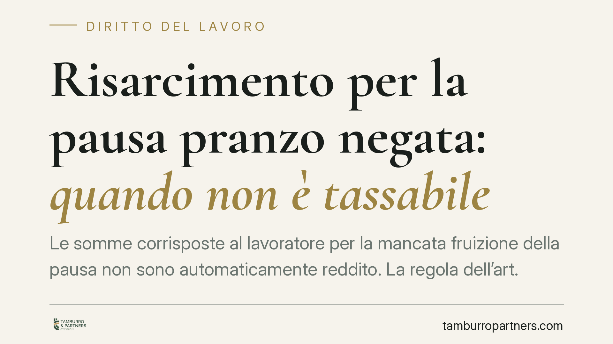

Risarcimento per la pausa pranzo negata: quando non è tassabile
Le somme corrisposte al lavoratore per la mancata fruizione della pausa non sono automaticamente reddito. La regola dell'art. 6, comma 2, del Tuir esclude dall'imponibile i risarcimenti che compensano una perdita e non una mancata retribuzione. La distinzione è tecnica ma decisiva: incide su busta paga, contributi e contenzioso. Vediamo criteri e limiti.

Risarcimento per la pausa pranzo negata: quando non è tassabile
Il tema tocca un punto ricorrente nei rapporti di lavoro: la sorte fiscale delle somme che il datore versa al dipendente per il mancato godimento della pausa. La domanda pratica è semplice: quelle somme vanno in busta paga come reddito, con relativa tassazione e contribuzione, oppure restano fuori dall'imponibile?
La risposta non è univoca. Dipende dalla natura della somma, non dal nome che le parti le attribuiscono. Vale qui, come sempre in materia fiscale, la prevalenza della sostanza sulla forma.
Il quadro normativo di riferimento
Due disposizioni del Tuir (d.P.R. 917/1986) governano la questione.
L'art. 51 fissa il principio di onnicomprensività del reddito di lavoro dipendente: costituisce reddito "tutto ciò che il lavoratore percepisce in relazione al rapporto di lavoro". La formula è ampia e comprende retribuzioni, indennità, compensi accessori. Ma il presupposto è che la somma sia collegata alla prestazione lavorativa, cioè che rappresenti un corrispettivo. Ciò che non ha funzione retributiva resta fuori dal perimetro, perché manca il nesso "in relazione al rapporto" nel senso corrispettivo richiesto dalla norma.
L'art. 6, comma 2, completa il quadro sul piano dei risarcimenti. Stabilisce che i proventi conseguiti in sostituzione di redditi, e le somme percepite a titolo risarcitorio, sono tassabili solo se sostituiscono un reddito o compensano la sua mancata percezione (il cosiddetto lucro cessante). Al contrario, il risarcimento che ristora una perdita subita, o la lesione di un diritto, non è imponibile.
Danno emergente, lucro cessante e lesione del diritto al riposo
Qui va corretta una semplificazione diffusa. Il pregiudizio da pausa negata non è, di regola, un semplice "danno emergente" inteso come esborso patrimoniale diretto. Il riposo intermedio tutela la salute e la dignità del lavoratore: la sua compromissione integra tipicamente una lesione di un diritto, con un danno di natura non patrimoniale.
La conseguenza fiscale è coerente con l'art. 6, comma 2. Se la somma ristora questa lesione — cioè compensa un pregiudizio e non una retribuzione mancata — non sostituisce alcun reddito e non è imponibile. Diverso è il caso in cui l'importo, pur etichettato come "risarcimento", remuneri di fatto tempo di lavoro prestato o dovuto: in tale ipotesi svolge una funzione retributiva e rientra nell'onnicomprensività dell'art. 51.
Il discrimine, dunque, non sta nell'etichetta ma nella funzione della somma: ristoro di una perdita/lesione (fuori imponibile) oppure sostituzione di una retribuzione (imponibile).
Implicazioni pratiche per lavoratori e datori
Per il datore di lavoro il rischio è la riqualificazione. Somme corrisposte come "risarcimento" ma prive di una reale causa risarcitoria possono essere ricondotte a integrazione retributiva, con recupero di imposte e contributi, sanzioni e interessi.
Per il lavoratore il tema è speculare: una somma correttamente qualificata come risarcimento non subisce prelievo, ma la qualificazione va sostenuta con elementi concreti (causale, contesto, documentazione).
In caso di verifica, l'Amministrazione guarda alla sostanza dell'operazione. Un accordo transattivo generico, senza indicazione della voce di danno ristorata, è terreno fertile per contestazioni.
Cosa fare in concreto
- Verifica la causale della somma: distingui con chiarezza tra ristoro di un pregiudizio e integrazione di retribuzione dovuta, ed esplicitalo negli atti.
- Documenta turni e timbrature: conserva prospetti orari e registrazioni che dimostrino l'effettiva mancata fruizione della pausa.
- Rivedi la busta paga: controlla che l'importo sia trattato in modo coerente con la sua natura, evitando inquadramenti contraddittori.
- Formalizza le transazioni con clausole che indichino la voce di danno ristorata e la relativa quantificazione; è opportuno far esaminare l'accordo prima della sottoscrizione.
- Valuta il profilo contributivo, non solo fiscale: la qualificazione incide anche sui contributi previdenziali.
Un criterio utile, non un automatismo
La non imponibilità dei risarcimenti che ristorano una perdita o una lesione è un principio consolidato, ricavabile direttamente dall'art. 6, comma 2, del Tuir. Ma non opera in automatico: si applica solo se la somma ha davvero natura risarcitoria e non retributiva. La solidità della qualificazione dipende dalla coerenza tra causale, documentazione e trattamento in busta paga.
Disclaimer
Contributo informativo a cura di Tamburro & Partners - Avv. Giuseppe Tamburro. Non costituisce parere legale.
Ogni storia di lavoro ha i suoi tempi.
Se gestisci HR e vuoi un confronto su contenzioso, ispezioni o licenziamenti, scrivi allo studio. Ti rispondiamo entro un giorno lavorativo.